Platforma za otvorenu nauku 2.0
2025-01-03
Ministarstvo nauke, tehnološkog razvoja i inovacija Republike Srbije usvojilo je novu nacionalnu politiku otvorene nauke – Platformu za otvorenu nauku 2.0 – koja se primenjuje na sve istraživačke projekte i programe finansirane iz javnih…
Testirajte NI4OS-Europe servise!
2022-04-21
U okviru projekta NI4OS-Europe, koji finansira Evropska komisija kroz program Horizon 2020 (European research infrastructures grant agreement no. 857645), formiran je katalog servisa u kom se može naći širok spektar repozitorijuma i…
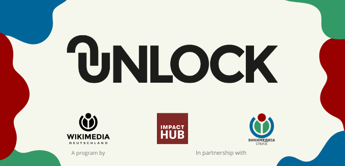
UNLOCK Accelerator 2022: Nemačka i Zapadni Balkan za ravnopravan pristup znanju
2022-04-10
U okviru programa Wikimedia UNLOCK Accelerator , koji realizuje Vikimedija Srbije u saradnji sa Vikimedijom Nemačke i Impakt habom u Beogradu, otvoren je konkurs za projekte, koji će dobiti podršku u vidu treninga, razmene iskustva i…
Srbija na konferenciji Open Science Fair 2021
2021-10-01
Treća konferencija Open Science Fair održana je u virtuelnom okruženju od 20. do 23. septembra 2021. godine, u organizaciji vodećih međunarodnih inicijativa u oblasti otvorene nauke: OpenAIRE , COAR , EIFL , Force11 , LA Referencia ,…
Uspostavljanje nacionalnih ekosistema za oblak otvorene nauke u Jugoistočnoj Evropi
2021-05-15
Nacionalne inicijative za oblak otvorene nauke Nacionalna inicijativa za oblak otvorene nauke zamišljena je kao koalicija onih institucija i organizacija unutar jedne države koje su zainteresovane za uključivanje u Evropski oblak za…
Autorska prava i politike samoarhiviranja
2021-05-14
Šta smete da deponujete u repozitorijum? Istraživači i bibliotekari su stalno u nedoumici šta (ni)je dozvoljeno deponovati kao puni tekst kako u repozitorijume, tako i na svoje lične stranice. Svi su spremni da poštuju prava izdavača,…
Servisi za otvorenu nauku u Jugoistočnoj Evropi: vebinar u okviru projekta NI4OS-Europe
2021-04-12
Projekat NI4OS-Europe – Nacionalne inicijative za otvorenu nauku u Evropi, aktivno učestvuje u izgradnji Evropskog oblaka za otvorenu nauku (European Open Science Cloud – EOSC), koji ima za cilj da naučnoj zajednici obezbedi lak i…
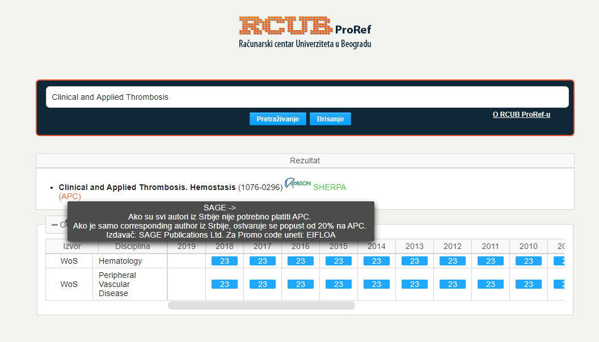
Troškovi objavljivanja u otvorenom pristupu: opcije i popusti
2021-04-05
Platformom za otvorenu nauku (2018) , uvodi se obavezan otvoreni pristup za sve publikacije nastale kao rezultat istraživanja koja su delimično ili u potpunosti finansirana javnim sredstvima. U istom dokumentu jasno se definiše da se…
Digitalna pismenost u naučnoistraživačkom radu: vebinari za bibliotekare
2021-03-30
Međunarodni konzorcijum EIFL ( Electronic Information for Libraries ) organizuje seriju vebinara namenjenih bibliotekarima koji učestvuju u edukaciji istraživača i studenata u oblasti digitalne pismenosti u istraživačkom radu. Glavne teme…
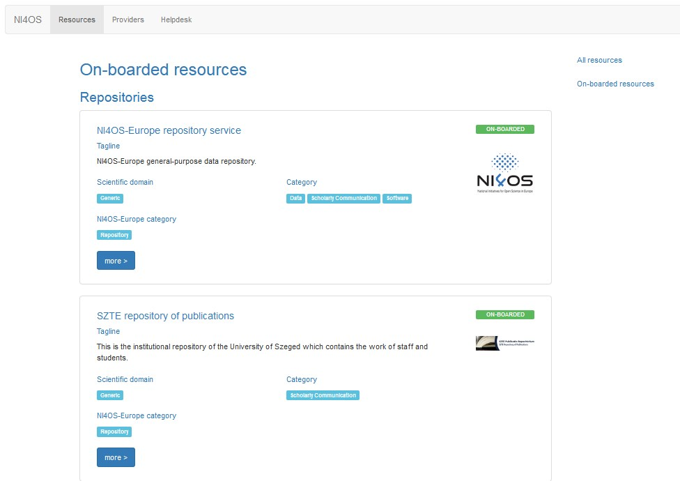
Integrisani servisi na NI4OS-Europe platformi
2021-03-10
Projekat NI4OS-Europe – Nacionalne inicijative za otvorenu nauku u Evropi jedan je od ključnih učesnika u izgradnji Evropskog oblaka za otvorenu nauku kao integrisanog, interoperabilnog digitalnog okruženja koje ima za cilj da naučnoj…
Serbia.RDM vebinar: Institucionalna infrastruktura i podrška upravljanju istraživačkim podacima
2021-03-03
U utorak 9. marta sa početkom u 10 časova održaće se vebinar na kome će biti predstavljeni rezultati projekta Boosting EOSC readiness: Creating a scalable model for capacity building in RDM . Učešće je besplatno, ali je registracija…
Dani otvorene nauke u Srbiji (III): Dvodnevna Zoom konferencija posvećena otvorenoj nauci
2020-10-30
Univerzitet u Beogradu, a uz podršku Horizont 2020 projekta OpenAIRE, organizuje Dane otvorene nauke (III). Cilj konferencije je upoznavanje istraživača iz Srbije sa principima otvorene nauke i aktuelnim inicijativama i zahtevima u ovoj…
Projekat NI4OS-Europe na Danima otvorene nauke (III)
2020-10-29
U okviru Dana otvorene nauke, u petak 6. novembra 2020, od 10.00 do 12.00 časova, održaće se sesija posvećena projektu National Initiatives for Open Science in Europe – NI4OS-Europe. Program (Sesija 3) Registracija: https://bit.ly/3jH9Off…
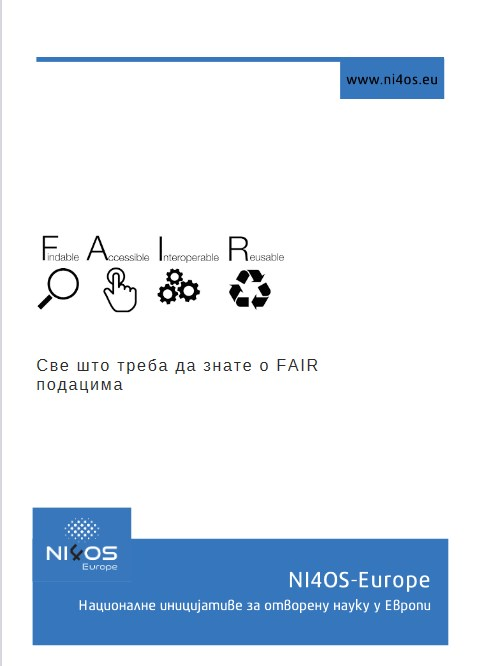
FAIR principi i Evropski oblak otvorene nauke
2020-09-01
U okviru projekta NI4OS-Europe pripremljene su dve brošure o FAIR principima i Evropskom oblaku za otvorenu nauku (EOSC) u kojima su ovi pojmovi objašnjeni ma koncizan i pristupačan način. Brošure su prevedene na srpski jezik i mogu se…
Otvorena nauka - praksa i perspektive
2020-07-23
Sveobuhvatna publikacija o principima otvorene nauke Istraživački tim projekta BEOPEN pripremio je publikaciju pod nazivom "Otvorena nauka - praksa i perspektive" u kojoj su jednostavnim jezikom i uz brojne primere opisani osnovni…

Pokrenuto pet univerzitetskih repozitorijuma
2020-03-05
Pet državnih univerziteta primenilo sistem DSpace-CRIS Univerzitet u Novom Sadu, Univerzitet u Kragujevcu, Univerzitet u Nišu, Državni univerzitet u Novom Pazaru i Univerzitet umetnosti u Beogradu pokrenuli su institucinalne repozitorjume…
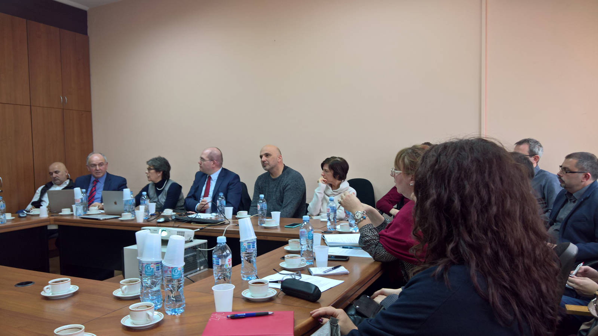
Razvoj otvorene nauke u Srbiji u skladu sa incijativama u Evropi
2020-01-20
Formiranje Tima za otvorenu nauku u Srbiji (TONuS) U Srbiji je formiran Tim za otvorenu nauku u Srbiji (TONuS), a prvi radni sastanak održan je 16. januara 2020. godine. Na sastanku su definisane osnovne teme kojima će se TONuS baviti,…
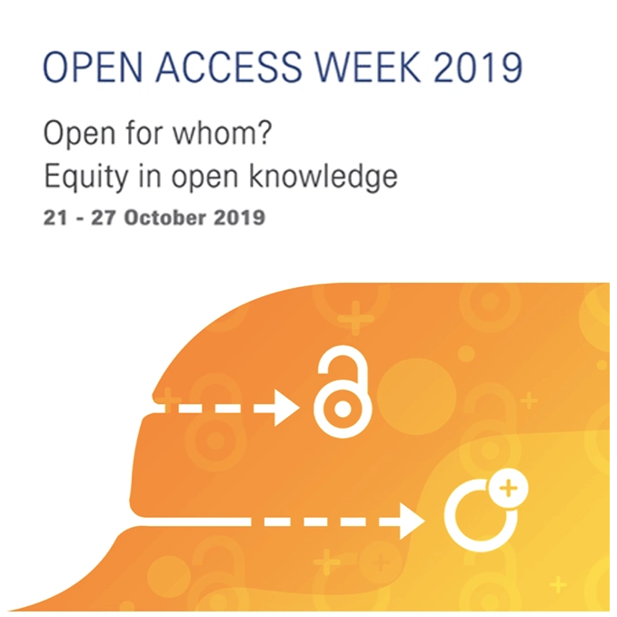
OpenAIRE obeležava Nedelju otvorenog pristupa serijom vebinara
2019-10-16
Međunarodna nedelja otvorenog pristupa održava se od 21. do 27. oktobra 2019. godine Ovogodišnja tema, „Otvoreno, za koga? Pravičnost u otvorenom znanju“, nadovezuje se na temu prošlogodišnje Nedelje otvorenog priatupa –„Stvaranje…
Konferencija „Primena slobodnog softvera i otvorenog hardvera“
2019-10-16
Druga PSSOH konferencija održava se u Nedelji otvorenog pristupa Ovogodišnja konferencija Primena slobodnog softvera i otvorenog hardvera održaće se 26. oktobra 2019. u amfiteatru „Nikola Tesla“ (br. 56) na Elektrotehničkom fakultetu u…
Usvojene institucionalne politike otvorene nauke
2019-04-09
Svi državni univerziteti usvojili su politike otvorene nauke U skladu sa preporukama Ministarstva prosvete, nauke i tehnoškog razvoja datim u Platformi za otvorenu nauku , svi državni univerziteti i više naučnih instituta usvojilo je…
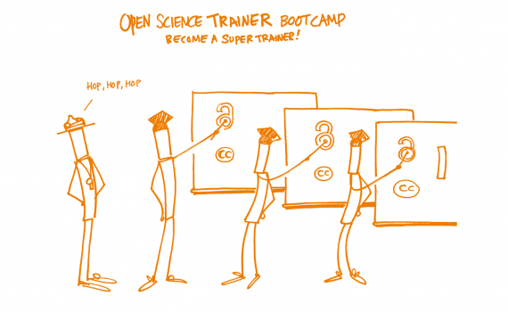
Open Science Trainer Bootcamp u Beogradu
2019-04-05
Univerzitetska biblioteka „Svetozar Marković“, 23. april 2019. Univerzitet u Beogradu u saradnji sa Univerzitetskom bibliotekom „Svetozar Marković“ organizuje Open Science Trainer Bootcamp (23. april 2019). Cilj intenzivnog jednodnevnog…
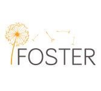
Kako ispuniti obaveze u vezi sa otvorenim pristupom u projektima H2020?
2019-02-03
Od 4. Do 8. februara 2019. konzorcijum FOSTER organizuje onlajn kurs o otvorenom pristupu publikacijama u projektima u okviru programa Horizont 2020. Kurs je besplatan i namenjen je istraživačima, rukovodiocima projekata, bibliotekarima i…
Povezivanje servisa Altmetric.com sa institucionalnim repozitorijumima iz Srbije
2019-01-19
Gde se sve pominju naučni radovi? U sedam institucionalnih repozitorijuma iz Srbije implementiran je dodatak koji prikazuje podatke koje prikuplja servis Altmetric.com – jedan od servisa koji prate one izvore informacija koje…
Praćenje otvorenog pristupa u Srbiji: servis OpenAIRE Monitor
2018-12-18
Grafički prikaz dostupnosti radova koje su objavili istraživači iz Srbije i koji su finansirani sredstvima MPNTR. Prikazani su samo radovi koji su objavljeni u časopisima indeksiranim u DOAJ i deponovani u repozitorijume koji…
Veštine i obuka za otvorenu nauku i EOSC (European Open Science Cloud) ekosistem
2018-12-16
Sprovođenje prinicipa otvorene nauke zahteva nove veštine i kod istraživača, i kod bibliotekara. Početkom decembra 2018. održan je koristan vebinar u okviru kog je dat veoma detaljan popis potrebnih veština. Prezentacija Snimak vebinara
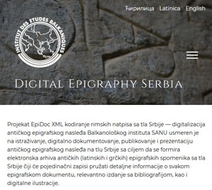
EpiDoc XML kodiranje rimskih natpisa sa tla Srbije: projekat Balkanološkog instituta SANU
2018-12-04
Projekat EpiDoc XML kodiranje rimskih natpisa sa tla Srbije — digitalizacija antičkog epigrafskog nasleđa Balkanološkog instituta SANU usmeren je na istraživanje, digitalno dokumentovanje, publikovanje i prezentaciju antičkog epigrafskog…
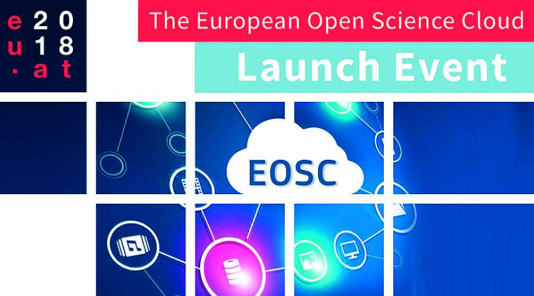
Predstavljanje portala EOSC
2018-11-15
Prva verzija portala European Open Science Cloud (EOSC) biće zvanično predstavljena 23. novembra 2018. godine u Beču. European Open Science Cloud (EOSC) je evropski projekat koji ima za cilj uspostavljanje centralne infrastrukture za…
Radionica Focus on Open Science
2018-11-05
Radionica Focus on Open Science: Open Science and the Management of A Cultural Change , održaće se 12. novembra 2018. godine u Univerzitetskoj biblioteci „Svetozar Marković“, Bulevar kralja Aleksandra 71, Beograd. Radionica traje od 10 do…
Održana konferencija „Primena slobodnog softvera i otvorenog hardvera“
2018-10-25
U subotu 13. oktobra, u Beogradu je održana konferencija „Primena slobodnog softvera i otvorenog hardvera“ . Konferenciju je organizovao Elektrotehnički fakultet Univerziteta u Beogradu. Pored dve sesije posvećene slobodnom softveru i…
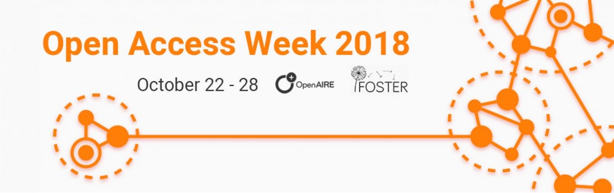
OpenAIRE i FOSTER obeležavaju Nedelju otvorenog pristupa serijom vebinara
2018-10-22
OpenAIRE i FOSTER obeležavaju Nedelju otvorenog pristupa serijom vebinara posvećenih otvorenom prustupu publikacijama i primarnim podacima prikupljenim tokom istraživanja, FAIR principima i tretmanu primarnih podataka, politikama otvorene…
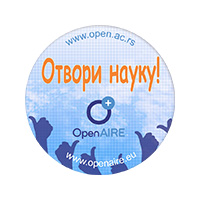
Dani otvorene nauke (II) u Beogradu
2018-10-18
U sklopu Erasmus+ projekta Boosting Engagement of Serbian Universities in Open Science , a uz podršku Horizon 2020 projekta OpenAIRE , u Beogradu će se 18. i 19. oktobra 2018. održati dvodnevna konferencija Dani otvorene nauke. Cilj…
Popust za troškove objavljivanja u otvorenom pristupu u časopisima Taylor & Francis
2018-08-18
Međunarodni konzorcijum eIFL (Electronic Information for Libraries) obnovio je ugovor sa izdavačkom kućom Taylor & Francis . Na osnovu ugovora istraživačima iz Srbije odobrava se popust u iznosu od 50% na troškove objavljivanja rada (APC)…
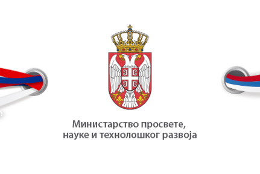
Usvojena Platforma otvorene nauke
2018-07-09
Inicijativa MPNTR za otvoreni pristup rezultatima projekata Ministarstvo prosvete, nauke i tehnološkog razvoja (MPNTR) usvojilo je Platformu za otvorenu nauku. Ovim dokumentom se uvodi obaveza deponovanja svih publikacija koje su rezultat…
Rezultati projekta BEOPEN
2018-06-01
Detaljnije informacije o rezultatima projekta BEOPEN, Erasmus+ projekta koji je okupio sve državne univerzitete možete naći na adresi: http://beopen.uns.ac.rs/events.php